네트워크관리사-2급 (2021-05-30 기출문제)
1과목: TCP/IP
1. IPv4의 IP Address 할당에 대한 설명으로 옳지 않은 것은?
- 모든 Network ID와 Host ID의 비트가 '1'이 되어서는 안 된다.
- Class B는 최상위 2비트를 '10'으로 설정한다.
- Class A는 최상위 3비트를 '110'으로 설정한다.
- '127.x.x.x' 형태의 IP Address는 Loopback 주소를 나타내는 특수 Address로 할당하여 사용하지 않는다.
(정답률: 84%)

2. TCP/IP에서 데이터 링크층의 데이터 단위는?
- 메시지
- 세그먼트
- 데이터그램
- 프레임
(정답률: 86%)
3. TCP가 제공하는 기능으로 옳지 않은 것은?
- 종단 간 흐름 제어를 위해 동적 윈도우(Dynamic Sliding Window) 방식을 사용한다.
- 한 번에 많은 데이터의 전송에 유리하기 때문에 화상 통신과 같은 실시간 통신에 사용된다.
- 송수신되는 데이터의 에러를 제어함으로서 신뢰성 있는 데이터 전송을 보장한다.
- Three Way Handshaking 과정을 통해 데이터를 주고받는다.
(정답률: 82%)
4. UDP 헤더 구조에 대한 설명으로 옳지 않은 것은?
- Source Port - 송신측 응용 프로세스 포트 번호 필드
- Destination Port - 선택적 필드로 사용하지 않을 때는 Zero로 채워지는 필드
- Checksum - 오류 검사를 위한 필드
- Length - UDP 헤더와 데이터 부분을 포함한 데이터 그램의 길이를 나타내는 필드
(정답률: 74%)
5. RARP에 대한 설명 중 올바른 것은?
- TCP/IP 프로토콜에서 데이터의 전송 서비스를 규정한다.
- TCP/IP 프로토콜의 IP에서 접속 없이 데이터의 전송을 수행하는 기능을 규정한다.
- 하드웨어 주소를 IP Address로 변환하기 위해서 사용한다.
- IP에서의 오류(Error) 제어를 위하여 사용되며, 시작 지 호스트의 라우팅 실패를 보고한다.
(정답률: 85%)
6. 인터넷 그룹 관리 프로토콜로 컴퓨터가 멀티캐스트 그룹을 인근의 라우터들에게 알리는 수단을 제공하는 인터넷 프로토콜은?
- ICMP
- IGMP
- EGP
- IGP
(정답률: 89%)
7. 다음 출력물에 대한 설명으로 옳지 않은 것은?
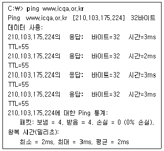
- ping 명령어를 이용하여 목적지(www.icqa.or.kr)와 정상적으로 통신되었을 확인하였다.
- ping 명령어를 이용하여 요청하고 응답받은 데이터의 사이즈는 32바이트이다.
- ping 명령어를 이용하여 요청하고 응답받은 시간은 평균 2ms 이다.
- 패킷의 살아 있는 시간(TTL, Time to Live)은 55초이다.
(정답률: 86%)
8. 서버를 관리하는 Kim 사원은 회사지침으로 기존 홈페이지를 http방식에서 https방식으로 변경하라고 지시가 내려져서 https의 특징에 대하여 알아보고 있는 중이다. 다음 보기 중에서 https의 특징으로 옳은 것은?
- 기존 http보다 암호화된 SSL/TLS를 전달한다.
- tcp/80번 포트를 사용한다.
- udp/443번 포트를 사용한다.
- 인증이 필요하지 않아 사용하기가 간편하다.
(정답률: 83%)
9. 네트워크와 서버를 관리하는 Kim 사원은 인터넷이 느려졌다는 민원을 받았다. 이를 해결하기 위해서 해당 ISP 주소쪽으로 명령어(A)를 입력하였더니 다소 지연이 있었음을 발견하였다. 이 사항을 확인하기 위해서 (A)에 들어가야 할 명령어는? (단, 윈도우 계열의 명령프롬프트(cmd)에서 실행하였다.)
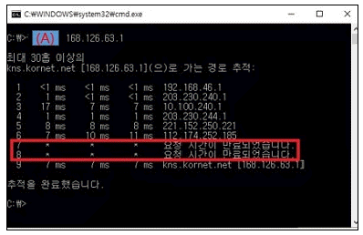
- nslookup
- tracert
- ping
- traceroute
(정답률: 78%)
10. DNS에 대한 설명으로 옳지 않은 것은?
- 도메인에 대하여 IP Address를 매핑한다.
- IP Address를 도메인 이름으로 변환하는 기능도 있다.
- IP Address를 효율적으로 관리하기 위한 서비스로 IP Address 및 Subnet Mask, Gateway Address를 자동으로 할당해 준다.
- 계층적 이름 구조를 갖는 분산형 데이터베이스로 구성되고 클라이언트·서버 모델을 사용한다.
(정답률: 71%)
11. 서울본사에 근무하는 Kim은 신규부서에 IP를 할당하려고 L3 스위치에 접속하였는데 IP검색 도중에 허가되지 않은 불법 IP 및 mac address를 발견하여 차단조치 하였다. Kim이 L3 스위치에서 불법 IP를 검색하기 위해서 내린 명령어(A)를 선택하시오. (단, 불법적으로 사용된 IP는 아래의 그림이며 사용된 L3 스위치는 Cisco 3750G이다.)
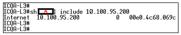
- rarp
- vlan
- cdp
- arp
(정답률: 67%)
12. TCP 헤더의 플래그 비트로 옳지 않은 것은?
- URG
- UTC
- ACK
- RST
(정답률: 69%)
13. IEEE 802.11 WLAN(무선랜) 접속을 위해 NIC에서 사용하고 있는 다중 접속 프로토콜은?
- ALOHA
- CDMA
- CSMA/CD
- CSMA/CA
(정답률: 77%)
14. 네트워크 및 서버관리자 Kim은 불법적으로 443 포트를 이용하여 52.139.250.253번 IP에서 관리자 Kim의 업무PC에 원격으로 접속시도가 이뤄진 흔적을 발견하게 되었다. 이 사항을 발견하기 위해서 (A)에 들어가야 할 명령어는? (단. 윈도우 계열의 명령프롬프트(cmd)에서 실행하였다.)
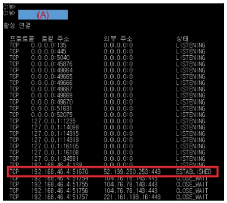
- ping
- tracert
- netstat –an
- nslookup
(정답률: 71%)
15. 전자메일을 전송하거나 수신할 때 사용되는 프로토콜로 옳지 않은 것은?
- SMTP(Simple Mail Transfer Protocol)
- MIME(Multi-purpose Internet Mail Extensions)
- POP3(Post Office Protocol 3)
- SNMP(Simple Network Management Protocol)
(정답률: 79%)
16. ICMP의 Message Type에 대한 설명으로 옳지 않은 것은?
- 0 - Echo Reply
- 5 - Echo Request
- 13 - Timestamp Request
- 17 - Address Mask Request
(정답률: 69%)
17. C Class인 네트워크의 서브넷 마스크가 ′255.255.255.192′ 이라면 둘 수 있는 서브넷의 개수는?
- 2
- 4
- 192
- 1024
(정답률: 78%)
2과목: 네트워크 일반
18. 전송을 받는 개체에서 발송지로부터 오는 데이터의 양이나 속도를 제한하는 프로토콜의 기능을 나타내는 용어는?
- 에러 제어
- 순서 제어
- 흐름 제어
- 접속 제어
(정답률: 90%)
19. 다음 (A) 안에 들어가는 용어 중 옳은 것은?
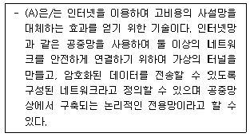
- VLAN
- NAT
- VPN
- Public Network
(정답률: 83%)
20. OSI 7 Layer의 전송 계층에서 동작하는 프로토콜들만으로 구성된 것은?
- ICMP, NetBEUI
- IP, TCP
- TCP, UDP
- NetBEUI, IP
(정답률: 86%)
21. OSI 7 Layer에서 암호/복호, 인증, 압축 등의 기능이 수행되는 계층은?
- Transport Layer
- Datalink Layer
- Presentation Layer
- Application Layer
(정답률: 80%)
22. ARQ 방식 중 에러가 발생한 블록으로 되돌아가 모든 블록을 재전송하는 것은?
- Go-back-N ARQ
- Selective ARQ
- Adaptive ARQ
- Stop-and-Wait ARQ
(정답률: 89%)
23. 아래 내용에서 IPv6의 일반적인 특징만을 나열한 것은?
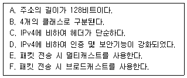
- A, B, C, D
- A, C, D, E
- B, C, D, E
- B, D, E, F
(정답률: 88%)
24. LAN의 구성형태 중 중앙의 제어점으로부터 모든 기기가 점 대 점(Point to Point) 방식으로 연결된 구성형태는?
- 링형 구성
- 스타형 구성
- 버스형 구성
- 트리형 구성
(정답률: 90%)
25. 다음 설명의 (A)에 들어갈 알맞은 용어는 무엇인가?
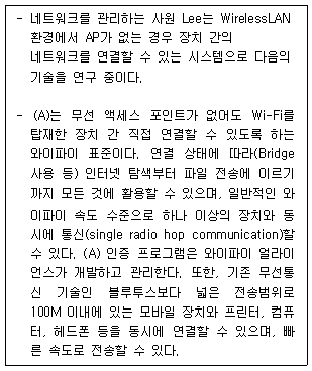
- Software Defined Network
- Wi-Fi Direct
- WiBro
- WiMAX
(정답률: 75%)
26. 다음에 설명하는 기술은 무엇인가?
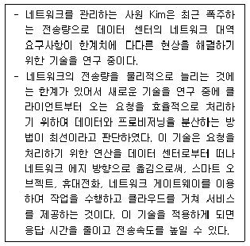
- 사물인터넷(IoT)
- 유비쿼터스(Ubiquitous)
- 에지 컴퓨팅(Edge Computing)
- 신 클라이언트(Thin client)
(정답률: 72%)
27. 다음은 무선 네트워크에 관한 내용이다. (A) 안에 들어가는 용어 중 옳은 것은?
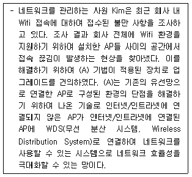
- WMN (Wireless Mesh Network)
- UWB (Ultra Wide Band)
- WPAN (Wireless Personal Area Network)
- CAN (Campus Area Network)
(정답률: 74%)
3과목: NOS
28. Linux에서 사용자에 대한 패스워드의 만료기간 및 시간 정보를 변경하는 명령어는?
- chage
- chgrp
- chmod
- usermod
(정답률: 79%)
29. 서버 담당자 Park 사원은 Hyper-V 부하와 서비스의 중단 없이 Windows Server 2012 R2 클러스터 노드에서 Windows Server 2016으로 운영체제 업그레이드를 진행하려고 한다. 다음 중 작업에 적절한 기능은 무엇인가?
- 롤링 클러스터 업그레이드
- 중첩 가상화
- gpupdate
- NanoServer
(정답률: 79%)
30. Linux 시스템의 ′ls -l′ 명령어에 의한 출력 결과이다. 옳지 않은 것은?
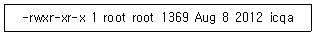
- 소유자 UID는 ′root′ 이다.
- 소유자 GID는 ′root′ 이다.
- 소유자는 모든 권한을 가지며, 그룹 사용자와 기타 사용자는 읽기, 실행 권한만 가능하도록 설정되었다.
- ′icqa′는 디렉터리를 의미하며 하위 디렉터리의 개수는 한 개 이다.
(정답률: 76%)
31. 다음 중 ( )에 알맞은 것은?
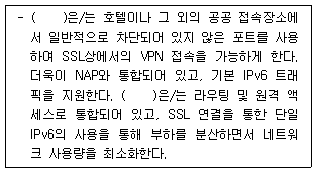
- RADIUS
- PPTP
- L2TP
- SSTP
(정답률: 73%)
32. Linux 시스템의 전반적인 상태를 실시간으로 프로세스들을 관리하거나 시스템 사용량을 모니터링할 수 있는 명령어는?
- ps
- top
- kill
- nice
(정답률: 62%)
33. DHCP의 장점으로 옳지 않은 것은?
- 클라이언트에게 자동으로 IP Address를 할당해 줄 수 있다.
- IP Address의 관리가 용이하다.
- 영구적인 IP Address를 필요로 하는 웹 서버에 대해서는 동적인 주소를 제공한다.
- 사용자들이 자주 바뀌는 학교와 같은 환경에서 특히 유용하다.
(정답률: 82%)
34. Windows Server 2016의 DNS 서버에서 정방향/역방향 조회 영역(Public/Inverse Domain Zone)에 대한 설명으로 올바른 것은?
- 정방향 조회 영역은 도메인 주소를 IP 주소로 변환하는 영역이다.
- 정방향 조회 영역에서 이름은 ′x.x.x.in-addr.arpa′의 형식으로 구성되는데, ′x.x.x′는 IP 주소 범위이다.
- 역방향 조회 영역은 도메인 주소를 IP 주소로 변환하는 영역이다.
- 역방향 조회 영역은 외부 질의에 대해 어떤 IP주소를 응답할 것인가를 설정한다.
(정답률: 72%)
35. Linux 시스템 명령어 중 root만 사용가능한 명령은?
- chown
- pwd
- Is
- rm
(정답률: 78%)
36. Linux 시스템 디렉터리에 대한 설명으로 옳지 않은 것은?
- /bin : 가장 기본적으로 사용하는 명령어가 들어있다.
- /etc : 각 시스템의 고유한 설정 파일들이 위치한다.
- /proc : 시스템 운영 중 파일의 크기가 변하는 파일들을 위한 공간이다.
- /tmp : 임시 파일들을 위한 공간이다.
(정답률: 74%)
37. 웹서버 담당자 Kim은 디렉터리 리스팅 방지, 심볼릭 링크 사용방지, SSI(Server-Side Includes)사용 제한, CGI실행 디렉터리 제한 등의 보안 설정을 진행하려고 한다. Apache 서버의 설정 파일 이름은?
- httpd.conf
- httpd-default.conf
- httpd-vhosts.conf
- httpd-mpm.conf
(정답률: 74%)
38. Windows Server 2016에서 새로 추가된 기능으로 Hyper-V와 비슷한 기능을 하지만 가볍게 생성하고 운영할 수 있고, 도커(Docker)라는 이름으로 소개되어 Unix/Linux 기반에서 사용해오던 기능은 무엇인가?
- 액티브 디렉터리
- 원격 데스크톱 서비스
- 컨테이너
- 분산파일서비스
(정답률: 73%)
39. Windows Server 2016의 DNS관리에서 아래 지문과 같은 DNS 설정 방식은?
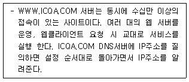
- 라운드 로빈
- 캐시플러그인
- 캐시서버
- AzureAutoScaling
(정답률: 82%)
40. 서버담당자 LEE 사원은 회사 전산실에 Windows Server 2016을 구축하고, Hyper-V 가상화 기술을 적용하려고 한다. Hyper-V에 대한 설명으로 옳지 않은 것은?
- 하드웨어 사용률을 높여 물리적인 서버의 운영 및 유지 관리 비용을 줄일 수 있다.
- 서버 작업을 실행하는데 필요한 하드웨어 양을 줄일 수 있다.
- 테스트 환경 재현 시간을 줄여 개발 및 테스트 효율성을 향상 시킬 수 있다.
- 장애 조치 구성에서 필요한 만큼 물리적인 컴퓨터를 사용하므로 서버 가용성이 줄어든다.
(정답률: 76%)
41. 서버 담당자가 Windows Server 2016 서버에서 파일 서버 구축에 NTFS와 ReFS 파일시스템을 고려하고 있다. NTFS와 ReFS 파일시스템에 대한 설명으로 옳지 않은 것은?
- NTFS는 퍼미션을 사용할 수 있어서 접근 권한을 사용자 별로 설정 할 수 있다.
- NTFS는 파일 시스템의 암호화를 지원한다.
- ReFS는 데이터 오류를 자동으로 확인하고 수정하는 기능이 있다.
- ReFS는 FAT32의 장점과 호환성을 최대한 유지한다.
(정답률: 57%)
42. 서버 담당자 Park 사원은 Windows Server 2016에서 Active Directory를 구축하여 관리의 편리성을 위해 그룹을 나누어 관리하고자 한다. 다음의 제시된 조건에 해당하는 그룹은 무엇인가?
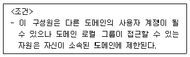
- Global Group
- Domain Local Group
- Universal Group
- Organizational Unit
(정답률: 76%)
43. Windows Server 2016의 이벤트 뷰어에 대한 설명으로 옳지 않은 것은?
- ′이 이벤트에 작업 연결′은 이벤트 발생 시 특정 작업이 일어나도록 설정하는 것이다.
- ′현재 로그 필터링′을 통해 특정 이벤트 로그만을 골라 볼 수 있다.
- 사용자 지정 보기를 XML로도 작성할 수 있다.
- ′구독′을 통해 관리자는 로컬 시스템의 이벤트에 대한 주기적인 이메일 보고서를 받을 수 있다.
(정답률: 72%)
44. Windows Server 2016의 ′netstat′ 명령 중 라우팅 테이블을 확인할 수 있는 명령 옵션은?
- netstat – a
- netstat - r
- netstat – n
- netstat - s
(정답률: 80%)
45. 서버 담당자 Park 사원은 IIS(인터넷 정보 서비스)를 설치한 후, IIS 관리자를 실행하기 위해 명령어를 사용하여 서비스를 실행하고자 한다. 이때 사용할 명령어로 올바른 것은?
- wf.msc
- msconfig
- inetmgr.exe
- dsac.exe
(정답률: 58%)
4과목: 네트워크 운용기기
46. 장비간 거리가 증가하거나 케이블 손실로 인해 감쇠된 신호를 재생시키기 위한 목적으로 사용되는 네트워크 장치는?
- Gateway
- Router
- Bridge
- Repeater
(정답률: 83%)
47. 내부에 코어(Core)와 이를 감싸는 굴절률이 다른 유리나 플라스틱으로 된 외부 클래딩(Cladding)으로 구성된 전송 매체는?
- 이중 나선(Twisted Pair)
- 동축 케이블(Coaxial Cable)
- 2선식 개방 선로(Two-Wire Open Lines)
- 광 케이블(Optical Cable)
(정답률: 87%)
48. L2 LAN 스위치가 이더넷 프레임을 중계 처리할 때 사용하는 주소는 무엇인가?
- MAC 주소
- IP 주소
- Post 주소
- URL 주소
(정답률: 79%)
49. RAID의 특징으로 옳지 않은 것은?
- 여러 개의 Disk에 일부 중복된 데이터를 나누어 저장
- read/write 속도를 증가
- Memory 용량 증가
- 데이터를 안전하게 백업
(정답률: 70%)
50. OSI 계층의 물리 계층에서 여러 대의 PC를 서로 연결할 때 전기적인 신호를 재생하여 신호 분배의 기능을 담당하는 네트워크 연결 장비는?
- Bridge
- Hub
- L2 Switch
- Router
(정답률: 81%)